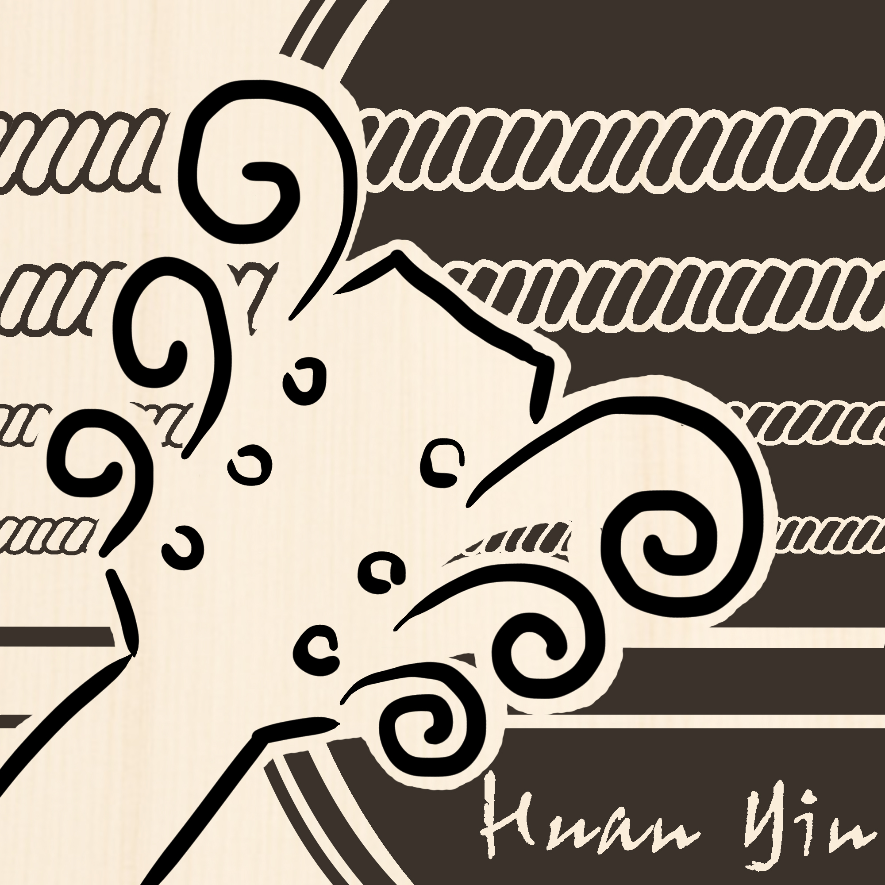

Singing Fretboard Editor
弦吟指板編輯器
請將手機橫放，以獲得最佳指板顯示
{{ tHead }}{{ tRest }}
編輯
指板
Singing Fretboard
{{ tHead }}
{{ tAcc }}
{{ tRest }}
{{ eHead }}
{{ eAcc }}
{{ eRest }}
{{ abLabel }}
{{ tuningLabel }}
{{ shiftLabel }}
⋮⋮
{{ d.nb }}
{{ d.na }}
{{ d.s }}
{{ d.nb }}
{{ d.na }}
{{ d.s }}
0
{{ f.t }}
{{ f.t }}
{{ d.nb }}
{{ d.na }}
{{ d.s }}
{{ d.nb }}
{{ d.na }}
{{ d.s }}

Fretboard Editor
弦吟指板編輯器
檔案
File
匯出圖片
Export
主音
Tonic
{{ k.t }}
{{ a.t }}
音階
Scale
{{ o.t }}
圓點標示
Labels
{{ l.t }}
調弦
Tuning
{{ b.lab }}
{{ b.n }}
{{ o.t }}
{{ favMark }}
{{ fretsLabel }}
{{ shiftText }}
{{ pitchText }}
顏色
Colors
{{ row.lab }}
新增音符：選擇顏色後，點擊指板以增加音符。
橡皮擦：按住 Alt（Option）或直接右鍵點擊。
整組上色
{{ d.t }}
數字 = 該音階級數。可更改對應之顏色，橡皮擦開啟時則清除。
起手模式
Start
套入音階
空白指板
臨時記憶
A / B
存入 A
存入 B
A
{{ aName }}
B
{{ bName }}
分別把兩組音階存入 A、B，點擊
空白鍵
即可來回切換。
儲存進度
Library
儲存
{{ loadPlaceholder }}
{{ o.t }}
×
✓
收藏這組調弦
重新命名收藏
Favorite
×
{{ favPitches }}
命名
收藏後會出現在「調弦」的下拉列表裡，前面標上 ★。留空就用上面的音名當名稱。
取消
收藏
提醒💡：選擇音階後，才會開啟「依級數整組上色」功能。
×
知道了
檔案
File
×
專案檔（.json）
儲存
⌘S
另存新檔
⇧⌘S
開啟…
⌘O
{{ fileMsg }}
關閉
匯出圖片
Export
×
版面
{{ b.t }}
檔案格式
{{ b.t }}
尺寸
{{ b.t }}
{{ b.note }}
背景
{{ transMark }}
去背（背景透明）
僅 PNG
{{ logoMark }}
加入 Logo
弦吟指板圖編輯器
取消
下載